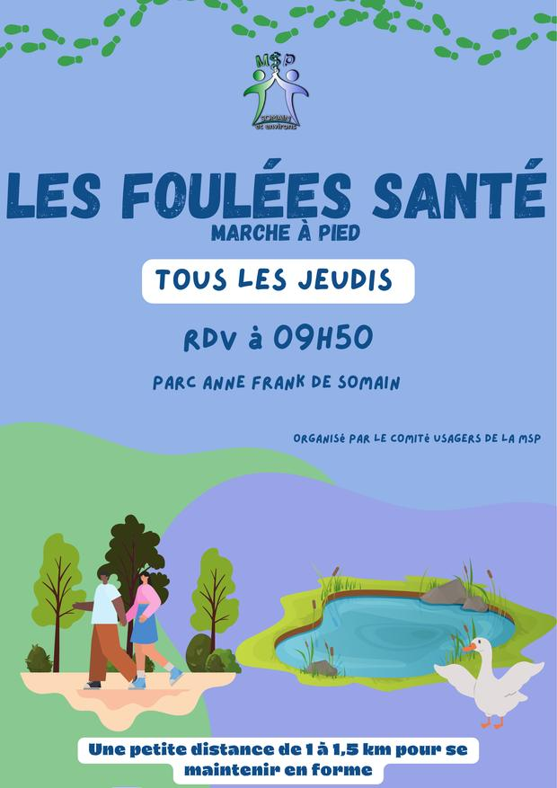
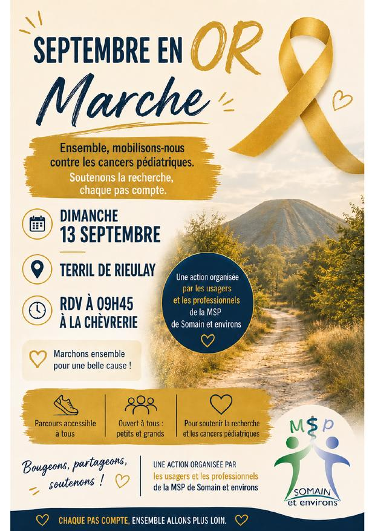

Médecine générale
Consultations de suivi, urgences du quotidien, certificats, dépistages et orientation vers les spécialistes.
4 médecins
Somain · Wandignies-Hamage · Fenain · Rieulay
32 professionnels de santé libéraux du territoire, chacun dans son cabinet, réunis autour d’un même projet de santé : vous écouter, vous accompagner et coordonner votre parcours de soins.
40 bis rue Pasteur
59490 Somain
La maison de santé
Une coordination renforcée au service de la prise en charge.
La MSP Somain et environs n’est pas un établissement unique : c’est un réseau de professionnels de santé libéraux. Trente-deux praticiens du territoire — médecins généralistes, infirmiers, kinésithérapeutes, pharmaciens, sages-femmes et spécialistes — continuent d’exercer dans leur cabinet respectif, tout en travaillant ensemble autour d’un projet de santé commun.
Concrètement, cela permet une meilleure coordination des parcours de soins : votre médecin, votre infirmier et votre kinésithérapeute peuvent échanger sur votre suivi et organiser les rendez-vous de manière plus fluide. Vous conservez votre praticien habituel, près de chez vous, tout en bénéficiant d’un accompagnement plus cohérent.
Nos praticiens
Cherchez par nom, par profession ou par rue, ou filtrez par spécialité.
Aucun praticien ne correspond à votre recherche. Essayez un autre mot, ou appelez la MSP au 07 72 14 73 25.
Nos services
Du suivi médical courant à la rééducation, à la prévention et à l'activité physique adaptée.
Consultations de suivi, urgences du quotidien, certificats, dépistages et orientation vers les spécialistes.
4 médecins
Pansements, injections, prises de sang, surveillance de traitements et soins à domicile.
9 infirmiers libéraux
Suivi rapproché des maladies chroniques, en relais du médecin traitant, avec un temps d’écoute plus long.
1 infirmier en pratique avancée
Rééducation après blessure ou opération, kiné respiratoire, dos et articulations, équilibre.
5 kinésithérapeutes
Délivrance des traitements, conseil, vaccination et accompagnement des ordonnances complexes.
4 pharmaciens
Suivi de grossesse, préparation à la naissance, contraception, rééducation et suivi post-natal.
3 sages-femmes
Troubles du langage et de la parole chez l’enfant et l’adulte, rééducation après AVC, déglutition.
1 orthophoniste
Accompagnement du diabète, du surpoids, des régimes prescrits et de l’équilibre alimentaire.
2 diététiciennes
Reprise encadrée de l’activité physique sur prescription, pour les maladies chroniques et l’après-cancer.
1 infirmière coordinatrice
Soins des pieds, semelles orthopédiques, suivi du pied diabétique et troubles de la marche.
1 pédicure-podologue
Prise en charge manuelle des douleurs articulaires, cervicales et lombaires, du nourrisson au senior.
1 ostéopathe
Actualités
La prévention est l’un des quatre axes de notre projet de santé. Elle se construit avec les habitants, au sein du comité usagers.
Organisée par les professionnels de santé et le comité des usagers de la MSP. Deux parcours au choix, accessibles à tous, suivis d’un moment convivial et gourmand.
Prêts à relever le défi ? Venez en rose !

Une marche de 1 à 1,5 km pour se maintenir en forme, ouverte à tous, sans inscription. Venez comme vous êtes.
Organisé par le comité usagers de la MSP.
Une matinée dédiée à la prévention du cancer du sein, salle du parc Anne Frank, avec de nombreux participants. Au programme : une marche rose, des échanges sur le dépistage, les facteurs de risque, les perturbateurs endocriniens et l’autopalpation (avec démonstration des bons gestes), l’activité physique et l’alimentation, le parcours de soins et les soins de support, des témoignages d’usagers et des interludes musicaux.
Octobre Rose, c’est un mois pour sensibiliser… mais la prévention, c’est toute l’année. Parlez-en autour de vous et faites-vous dépister.

Ensemble, mobilisons-nous contre les cancers pédiatriques. Un parcours accessible à tous, petits et grands, pour soutenir la recherche.
Une action organisée par les usagers et les professionnels de la MSP.
Le comité usagers réunit des habitants de Somain et des communes voisines qui participent à la vie de la maison de santé. Ce ne sont pas des professionnels de santé : ce sont des patients, des aidants, des retraités, des parents, qui donnent de leur temps.
Ils organisent les Foulées Santé du jeudi, tiennent des stands lors des campagnes de dépistage, montent des marches solidaires comme Septembre en Or, et font remonter aux professionnels ce qui manque ou ce qui fonctionne mal sur le territoire. Pérenniser ce comité fait partie de notre projet de santé.
Vous souhaitez les rejoindre ? Aucune compétence particulière n'est demandée, seulement l'envie de participer. Écrivez-nous ou appelez la MSP.
Chaque année, la MSP mène une dizaine de campagnes auprès des habitants, des collèges et des lycées du secteur. Plusieurs sont conduites avec la CPTS du territoire.
Autres thèmes travaillés depuis 2021 :
Rendez-vous
Chaque praticien gère son propre agenda : les horaires varient d'un cabinet à l'autre.
Les praticiens équipés de Doctolib affichent leurs créneaux disponibles en temps réel.
Le numéro de chaque praticien figure sur sa fiche, dans la section Nos praticiens. Pour le cabinet médical du 23 rue Anatole France : 03 27 90 60 33.
23 rue Anatole France et 40 bis rue Pasteur, Somain — médecins généralistes et infirmier en pratique avancée.
| Du lundi au vendredi | 8 h 00 – 20 h 00 |
|---|---|
| Samedi | 8 h 00 – 12 h 00 |
| Dimanche | Fermé |
Pour les autres cabinets — infirmiers, kinésithérapeutes, pharmacies, sages-femmes — appelez directement le praticien concerné.
Nos cabinets
Dix-sept lieux d'exercice répartis sur Somain et les communes voisines. Le siège de la MSP se trouve au 40 bis rue Pasteur.
Contact
Ce formulaire est destiné à la coordination de la MSP. Il ne remplace pas un appel en cas d’urgence ni une demande de rendez-vous avec votre praticien. Pour un suivi médical ou un résultat d’examen, merci de contacter directement votre cabinet.
Informations légales
Dr Perrine Langagne, en qualité de gérante de la SISA MSP Somain et environs.
Le site est hébergé par GitHub, Inc. (service GitHub Pages), 88 Colin P. Kelly Jr. Street, San Francisco, CA 94107, États-Unis — github.com.
Entité européenne du groupe : GitHub B.V., Prins Bernhardplein 200, 1097 JB Amsterdam, Pays-Bas.
Le logo, les textes, les visuels et les affiches présentés sur ce site sont la propriété de la SISA MSP Somain et environs ou de ses partenaires. Toute reproduction, même partielle, est interdite sans autorisation écrite préalable.
Les praticiens présentés exercent en libéral, chacun dans son propre cabinet. Ils sont indépendants dans l'exercice de leur art et responsables des soins qu'ils dispensent. Les coordonnées publiées le sont avec leur accord ; toute demande de modification ou de retrait peut être adressée à la MSP par email.
Les informations de ce site ont une visée informative et ne constituent en aucun cas un avis médical, un diagnostic ou une prescription. Elles ne remplacent pas une consultation. En cas d'urgence, appelez le 15 (SAMU) ou le 112.
La SISA MSP Somain et environs, représentée par sa gérante, est responsable du traitement des données collectées sur ce site.
Ce site ne dépose aucun cookie et ne recourt à aucun outil de mesure d'audience. Aucun formulaire de suivi, aucun traceur publicitaire n'y figure.
Le site est hébergé aux États-Unis par GitHub, Inc. Lors de la consultation des pages, l'hébergeur enregistre l'adresse IP du visiteur dans ses journaux techniques, à des fins de sécurité et pendant une durée limitée. La MSP n'a pas accès à ces journaux et n'en fait aucun usage.
Le formulaire de contact n'envoie rien à un serveur : il prépare un message dans votre propre logiciel de messagerie, que vous restez libre d'envoyer ou non. Les informations que vous y saisissez — nom, email, téléphone, message — ne nous parviennent donc qu'au moment où vous choisissez d'envoyer ce message.
Les messages reçus sont utilisés uniquement pour répondre à votre demande. Ils sont conservés le temps nécessaire au traitement de celle-ci, puis supprimés. Ils ne sont ni cédés, ni revendus, ni utilisés à des fins commerciales ou de prospection.
Ils arrivent dans la boîte de réception de la MSP, hébergée par Google (Gmail), qui applique sa propre politique de confidentialité. Pour une demande que vous préférez garder hors de ce circuit, appelez la MSP au 07 72 14 73 25.
Ce site n'est pas un outil de suivi médical. N'y transmettez aucune information relative à votre santé : ni symptôme, ni traitement, ni résultat d'examen. Ces échanges relèvent de la consultation, de votre dossier médical ou de Mon espace Santé.
Conformément au Règlement général sur la protection des données (RGPD) et à la loi Informatique et Libertés, vous disposez d'un droit d'accès, de rectification, d'effacement, de limitation et d'opposition sur vos données. Pour l'exercer, écrivez à mspsomainetenvirons@gmail.com ou à la SISA MSP Somain et environs, 40 bis rue Pasteur, 59490 Somain.
En cas de désaccord persistant, vous pouvez saisir la CNIL — 3 place de Fontenoy, TSA 80715, 75334 Paris Cedex 07 — ou déposer une plainte sur cnil.fr.
Ce site renvoie vers des services tiers (Doctolib, Facebook, Ameli, Santé.fr) qui appliquent leurs propres politiques de confidentialité. La MSP n'exerce aucun contrôle sur les données que ces services collectent.